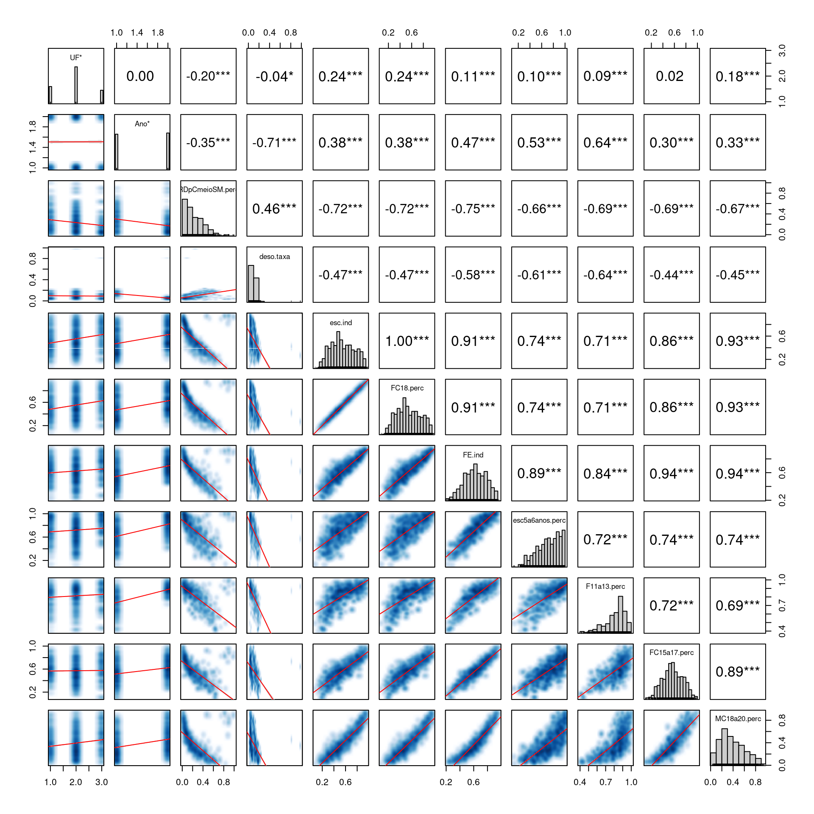
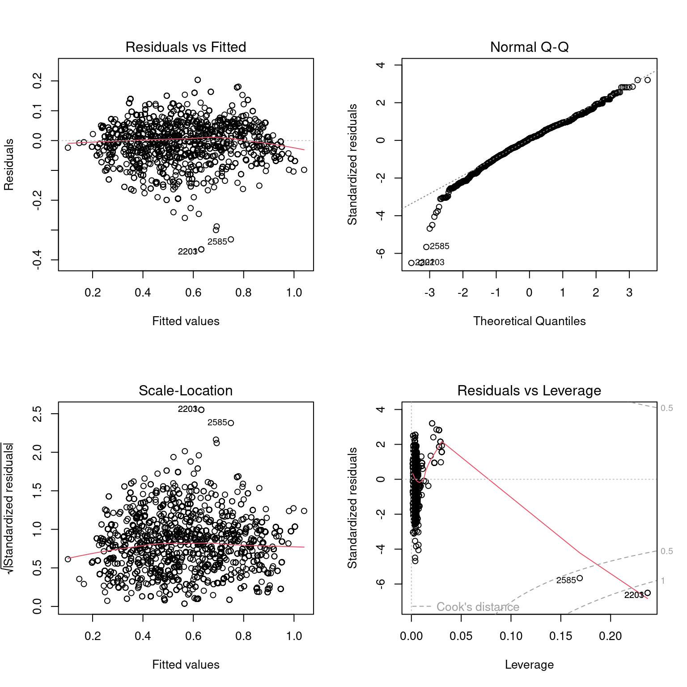

Indicadores sociais e renda
Suelen Priscila Buffon e Henrique Laureano
Last modification on 2022-08-05 14:19:06
Dicionário
Para facilitar o manuseio renomeamos a maioria das variáveis, abaixo listamos o que cada
labelutilizado significa.
RDpCmeioSM.perc: Porcentagem de pessoas com renda domiciliar per capita igual ou inferior a meio salário mínimo (de 2010);
deso.taxa: Taxa de desocupação da população de 18 anos ou mais de idade;
esc.ind: Subíndice de escolaridade - IDHM Educação;
FC18.perc: % de 18 anos ou mais com fundamental completo;
FE.ind: Subíndice de frequência escolar - IDHM Educação;
esc5a8anos.perc: % de 5 a 6 anos na escola;
F11a13.perc: % de 11 a 13 anos nos anos finais do fundamental ou com fundamental completo;
FC15a17.perc: % de 15 a 17 anos com fundamental completo;
MC18a20.perc: % de 18 a 20 anos com médio completo.
Banco de dados com 2586 registros.
Medidas descritivas
Variáveis quantitativas
Geral
| Variable | Mínimo | 1o Quartil | Mediana | Média | Desvio Padrão | 3o Quartil | Maximo | n |
|---|---|---|---|---|---|---|---|---|
| RDpCmeioSM.perc | 0.010 | 0.085 | 0.193 | 0.235 | 0.180 | 0.347 | 1.000 | 2586 |
| deso.taxa | 0.011 | 0.048 | 0.078 | 0.094 | 0.058 | 0.132 | 0.980 | 2586 |
| esc.ind | 0.078 | 0.388 | 0.520 | 0.549 | 0.200 | 0.705 | 0.960 | 2586 |
| FC18.perc | 0.078 | 0.388 | 0.520 | 0.549 | 0.200 | 0.705 | 0.960 | 2586 |
| FE.ind | 0.220 | 0.506 | 0.625 | 0.623 | 0.161 | 0.752 | 0.965 | 2586 |
| esc5a6anos.perc | 0.121 | 0.578 | 0.741 | 0.718 | 0.195 | 0.885 | 1.000 | 2586 |
| F11a13.perc | 0.398 | 0.754 | 0.848 | 0.812 | 0.120 | 0.897 | 1.000 | 2586 |
| FC15a17.perc | 0.108 | 0.452 | 0.568 | 0.571 | 0.177 | 0.706 | 1.000 | 2586 |
| MC18a20.perc | 0.030 | 0.222 | 0.356 | 0.391 | 0.216 | 0.550 | 0.942 | 2586 |
Por UF
| Variable | UF | Mínimo | 1o Quartil | Mediana | Média | Desvio Padrão | 3o Quartil | Maximo | n |
|---|---|---|---|---|---|---|---|---|---|
| RDpCmeioSM.perc | PR | 0.011 | 0.108 | 0.216 | 0.262 | 0.180 | 0.385 | 1.000 | 658 |
| RDpCmeioSM.perc | RS | 0.010 | 0.106 | 0.224 | 0.254 | 0.180 | 0.368 | 0.980 | 1411 |
| RDpCmeioSM.perc | SC | 0.010 | 0.048 | 0.086 | 0.147 | 0.152 | 0.195 | 0.900 | 517 |
| deso.taxa | PR | 0.016 | 0.045 | 0.072 | 0.090 | 0.052 | 0.132 | 0.224 | 658 |
| deso.taxa | RS | 0.011 | 0.054 | 0.079 | 0.100 | 0.062 | 0.142 | 0.980 | 1411 |
| deso.taxa | SC | 0.012 | 0.044 | 0.068 | 0.081 | 0.053 | 0.113 | 0.810 | 517 |
| esc.ind | PR | 0.078 | 0.366 | 0.486 | 0.508 | 0.186 | 0.639 | 0.948 | 658 |
| esc.ind | RS | 0.134 | 0.370 | 0.504 | 0.529 | 0.196 | 0.670 | 0.952 | 1411 |
| esc.ind | SC | 0.195 | 0.514 | 0.679 | 0.658 | 0.191 | 0.819 | 0.960 | 517 |
| FC18.perc | PR | 0.078 | 0.366 | 0.486 | 0.508 | 0.186 | 0.639 | 0.948 | 658 |
| FC18.perc | RS | 0.134 | 0.370 | 0.504 | 0.529 | 0.196 | 0.670 | 0.952 | 1411 |
| FC18.perc | SC | 0.195 | 0.514 | 0.679 | 0.658 | 0.191 | 0.819 | 0.960 | 517 |
| FE.ind | PR | 0.220 | 0.531 | 0.642 | 0.635 | 0.143 | 0.735 | 0.965 | 658 |
| FE.ind | RS | 0.242 | 0.473 | 0.587 | 0.590 | 0.160 | 0.706 | 0.949 | 1411 |
| FE.ind | SC | 0.270 | 0.625 | 0.733 | 0.700 | 0.156 | 0.817 | 0.945 | 517 |
| esc5a6anos.perc | PR | 0.133 | 0.633 | 0.787 | 0.761 | 0.177 | 0.921 | 1.000 | 658 |
| esc5a6anos.perc | RS | 0.121 | 0.519 | 0.675 | 0.653 | 0.194 | 0.813 | 1.000 | 1411 |
| esc5a6anos.perc | SC | 0.474 | 0.733 | 0.880 | 0.841 | 0.139 | 0.952 | 1.000 | 517 |
| F11a13.perc | PR | 0.398 | 0.717 | 0.837 | 0.800 | 0.117 | 0.881 | 1.000 | 658 |
| F11a13.perc | RS | 0.418 | 0.762 | 0.843 | 0.809 | 0.117 | 0.897 | 0.992 | 1411 |
| F11a13.perc | SC | 0.437 | 0.777 | 0.872 | 0.835 | 0.128 | 0.939 | 1.000 | 517 |
| FC15a17.perc | PR | 0.182 | 0.501 | 0.599 | 0.602 | 0.142 | 0.709 | 0.965 | 658 |
| FC15a17.perc | RS | 0.166 | 0.411 | 0.533 | 0.539 | 0.182 | 0.670 | 1.000 | 1411 |
| FC15a17.perc | SC | 0.108 | 0.504 | 0.641 | 0.621 | 0.183 | 0.752 | 0.973 | 517 |
| MC18a20.perc | PR | 0.030 | 0.222 | 0.367 | 0.377 | 0.194 | 0.500 | 0.905 | 658 |
| MC18a20.perc | RS | 0.030 | 0.186 | 0.313 | 0.357 | 0.209 | 0.487 | 0.942 | 1411 |
| MC18a20.perc | SC | 0.061 | 0.298 | 0.500 | 0.503 | 0.224 | 0.670 | 0.927 | 517 |
Por Ano
| Variable | Ano | Mínimo | 1o Quartil | Mediana | Média | Desvio Padrão | 3o Quartil | Maximo | n |
|---|---|---|---|---|---|---|---|---|---|
| RDpCmeioSM.perc | 2000 | 0.010 | 0.153 | 0.276 | 0.299 | 0.181 | 0.436 | 0.900 | 1272 |
| RDpCmeioSM.perc | 2010 | 0.010 | 0.064 | 0.130 | 0.173 | 0.157 | 0.246 | 1.000 | 1314 |
| deso.taxa | 2000 | 0.023 | 0.110 | 0.132 | 0.136 | 0.037 | 0.165 | 0.233 | 1272 |
| deso.taxa | 2010 | 0.011 | 0.039 | 0.049 | 0.053 | 0.045 | 0.064 | 0.980 | 1314 |
| esc.ind | 2000 | 0.078 | 0.305 | 0.434 | 0.471 | 0.195 | 0.618 | 0.918 | 1272 |
| esc.ind | 2010 | 0.212 | 0.475 | 0.613 | 0.625 | 0.175 | 0.787 | 0.960 | 1314 |
| FC18.perc | 2000 | 0.078 | 0.305 | 0.434 | 0.471 | 0.196 | 0.618 | 0.918 | 1272 |
| FC18.perc | 2010 | 0.212 | 0.475 | 0.613 | 0.625 | 0.175 | 0.786 | 0.960 | 1314 |
| FE.ind | 2000 | 0.220 | 0.421 | 0.528 | 0.546 | 0.159 | 0.645 | 0.948 | 1272 |
| FE.ind | 2010 | 0.454 | 0.603 | 0.698 | 0.698 | 0.122 | 0.791 | 0.965 | 1314 |
| esc5a6anos.perc | 2000 | 0.121 | 0.474 | 0.616 | 0.613 | 0.187 | 0.746 | 1.000 | 1272 |
| esc5a6anos.perc | 2010 | 0.405 | 0.720 | 0.849 | 0.820 | 0.142 | 0.940 | 1.000 | 1314 |
| F11a13.perc | 2000 | 0.398 | 0.646 | 0.750 | 0.734 | 0.120 | 0.822 | 0.987 | 1272 |
| F11a13.perc | 2010 | 0.712 | 0.853 | 0.887 | 0.887 | 0.054 | 0.926 | 1.000 | 1314 |
| FC15a17.perc | 2000 | 0.108 | 0.384 | 0.513 | 0.517 | 0.181 | 0.636 | 0.976 | 1272 |
| FC15a17.perc | 2010 | 0.266 | 0.507 | 0.615 | 0.623 | 0.156 | 0.742 | 1.000 | 1314 |
| MC18a20.perc | 2000 | 0.030 | 0.168 | 0.268 | 0.318 | 0.201 | 0.450 | 0.896 | 1272 |
| MC18a20.perc | 2010 | 0.062 | 0.293 | 0.431 | 0.462 | 0.207 | 0.610 | 0.942 | 1314 |
Variáveis qualitativas
UF
| PR | RS | SC | |
|---|---|---|---|
| n | 658.000 | 1411.000 | 517.0 |
| Percentual | 0.254 | 0.546 | 0.2 |
Ano
| 2000 | 2010 | |
|---|---|---|
| n | 1272.000 | 1314.000 |
| Percentual | 0.492 | 0.508 |
Modelagem
Tentando entender o Subíndice de escolaridade - IDHM Educação (
esc.ind) em termos das demais variáveis.
Relações e correlações

Podemos chamar a figura acima de matriz. Na diagonal principal temos o histograma de cada variável, indicando a forma como sua massa de probabilidade se distribui. Abaixo da diagonal temos a dispersão entre todas as variáveis, uma versus outra. Acima da diagonal temos o correspondente coeficiente de correlação linear de Pearson (Becker, Chambers, and Wilks 1988). A quantidade de asteriscos ao lado da correlação indica o nível de significância associado ao seu correspondente teste de hipótese.
- Zero asterisco indica valor-p > 0.05;
- Um asterisco indica 0.01 < valor-p < 0.05;
- Dois asteriscos indica 0.001 < valor-p < 0.01;
- Três asteriscos indica valor-p < 0.001.
Podemos ver várias coisas a partir dessa matriz, mas provavelmente a que seja mais interessante pontuar agora é:
- Todas as variáveis educacionais são fortemente e positivamente correlacionadas. A correlação mais fraca é de 0.69 (um valor alto e forte) e a mais forte é de 1, correlação perfeita.
A conclusão a partir dessa observação é a redundância em termos no modelo a variável
FC18.perc, perfeitamente correlacionada com a respostaesc.ind. Dado que as demais variáveis educacionais também são fortemente correlacionadas, uma abordagem que pode ser seguida é a criação de um indicador que as representa. Essas são medidas para contornar o problema da multicolinearidade (forte correlação entre variáveis) que pode prejudicar o processo de ajuste de modelos.
Modelo linear Gaussiano
Por mais que a nossa resposta seja limitada ao intervalo [0, 1], nada nos impede de assumir distribuição Normal. O que devemos nos atentar é na verificação dos pressupostos para assim obter um ajuste de qualidade. A principal vantagem em assumir distribuição Normal (Chambers 1992 Linear models, Chapter 4; Wilkinson and Rogers 1973) é a direta interpretação dos coeficientes estimados.
Começamos com todas as variáveis:
UF,Ano,RDpCmeioSM.perc,deso.taxa,FE.ind,esc5a6anos.perc,F11a13.perc,FC15a17.perceMC18a20.perc.
Call:
lm(formula = esc.ind ~ . - FC18.perc, data = dat)
Residuals:
Min 1Q Median 3Q Max
-0.36477 -0.03827 0.00597 0.04470 0.20348
Coefficients:
Estimate Std. Error t value Pr(>|t|)
(Intercept) 0.175920 0.018291 9.618 < 2e-16 ***
UFRS 0.047586 0.003435 13.855 < 2e-16 ***
UFSC 0.048252 0.004187 11.524 < 2e-16 ***
Ano2010 0.031232 0.004182 7.469 1.10e-13 ***
RDpCmeioSM.perc -0.138034 0.011032 -12.513 < 2e-16 ***
deso.taxa 0.110163 0.033967 3.243 0.0012 **
FE.ind -18.155336 4.332814 -4.190 2.88e-05 ***
esc5a6anos.perc 4.606635 1.082946 4.254 2.18e-05 ***
F11a13.perc 4.492902 1.084628 4.142 3.55e-05 ***
FC15a17.perc 4.684357 1.082992 4.325 1.58e-05 ***
MC18a20.perc 5.177068 1.083276 4.779 1.86e-06 ***
---
Signif. codes: 0 '***' 0.001 '**' 0.01 '*' 0.05 '.' 0.1 ' ' 1
Residual standard error: 0.06418 on 2575 degrees of freedom
Multiple R-squared: 0.8978, Adjusted R-squared: 0.8974
F-statistic: 2263 on 10 and 2575 DF, p-value: < 2.2e-16Vemos que tudo é altamente significativo.
Apenas para descargo de consciência, performamos uma processo stepwise de seleção de variáveis basedo no Critério de Informação de Akaike (AIC, em inglês) (Venables and Ripley 2002). Como podemos ver abaixo, todas as variáveis se mantém.
Call:
lm(formula = esc.ind ~ (UF + Ano + RDpCmeioSM.perc + deso.taxa +
FC18.perc + FE.ind + esc5a6anos.perc + F11a13.perc + FC15a17.perc +
MC18a20.perc) - FC18.perc, data = dat)
Residuals:
Min 1Q Median 3Q Max
-0.36477 -0.03827 0.00597 0.04470 0.20348
Coefficients:
Estimate Std. Error t value Pr(>|t|)
(Intercept) 0.175920 0.018291 9.618 < 2e-16 ***
UFRS 0.047586 0.003435 13.855 < 2e-16 ***
UFSC 0.048252 0.004187 11.524 < 2e-16 ***
Ano2010 0.031232 0.004182 7.469 1.10e-13 ***
RDpCmeioSM.perc -0.138034 0.011032 -12.513 < 2e-16 ***
deso.taxa 0.110163 0.033967 3.243 0.0012 **
FE.ind -18.155336 4.332814 -4.190 2.88e-05 ***
esc5a6anos.perc 4.606635 1.082946 4.254 2.18e-05 ***
F11a13.perc 4.492902 1.084628 4.142 3.55e-05 ***
FC15a17.perc 4.684357 1.082992 4.325 1.58e-05 ***
MC18a20.perc 5.177068 1.083276 4.779 1.86e-06 ***
---
Signif. codes: 0 '***' 0.001 '**' 0.01 '*' 0.05 '.' 0.1 ' ' 1
Residual standard error: 0.06418 on 2575 degrees of freedom
Multiple R-squared: 0.8978, Adjusted R-squared: 0.8974
F-statistic: 2263 on 10 and 2575 DF, p-value: < 2.2e-16
Nos gráficos acima verificamos visualmente a qualidade do modelo ajustado. No gráfico superior-esquerdo vemos uma fulga da normalidade na calda inferior, e nos demais gráficos vemos um padrão: três observações discrepantes.
Essas três observações discrepantes são apresentadas a seguir.
UF Ano RDpCmeioSM.perc deso.taxa esc.ind FC18.perc FE.ind esc5a6anos.perc
1 RS 2010 0.2486 0.98 0.267 0.2669 0.621 0.5700
2 RS 2010 0.2486 0.98 0.267 0.2669 0.621 0.5700
3 SC 2010 0.0856 0.81 0.418 0.4182 0.752 0.9474
F11a13.perc FC15a17.perc MC18a20.perc
1 0.9219 0.6419 0.3483
2 0.9219 0.6419 0.3483
3 0.8716 0.7336 0.4544A variável em que elas se destacam é
deso.taxa. O quantil 99 dessa variável é 0.2111%. Ou seja, as três apresentam valores extremamente discrepantes das demais. Sendo assim, removemos essas três linhas da base de dados e reajustamos o modelo.
dat2 <- dat[-c(2201, 2203, 2585), ]
mod <- update(mod, data=dat2)
mod <- MASS::stepAIC(mod, trace=FALSE);summary(mod)
Call:
lm(formula = esc.ind ~ (UF + Ano + RDpCmeioSM.perc + deso.taxa +
FC18.perc + FE.ind + esc5a6anos.perc + F11a13.perc + FC15a17.perc +
MC18a20.perc) - FC18.perc, data = dat2)
Residuals:
Min 1Q Median 3Q Max
-0.285037 -0.038851 0.001595 0.039581 0.216965
Coefficients:
Estimate Std. Error t value Pr(>|t|)
(Intercept) 0.011463 0.019966 0.574 0.565937
UFRS 0.046438 0.003264 14.227 < 2e-16 ***
UFSC 0.052492 0.003988 13.163 < 2e-16 ***
Ano2010 0.075737 0.004781 15.843 < 2e-16 ***
RDpCmeioSM.perc -0.146441 0.010494 -13.955 < 2e-16 ***
deso.taxa 0.824325 0.053496 15.409 < 2e-16 ***
FE.ind -12.334771 4.131698 -2.985 0.002859 **
esc5a6anos.perc 3.181667 1.032534 3.081 0.002082 **
F11a13.perc 3.096129 1.033980 2.994 0.002776 **
FC15a17.perc 3.255814 1.032594 3.153 0.001634 **
MC18a20.perc 3.705394 1.033075 3.587 0.000341 ***
---
Signif. codes: 0 '***' 0.001 '**' 0.01 '*' 0.05 '.' 0.1 ' ' 1
Residual standard error: 0.06098 on 2572 degrees of freedom
Multiple R-squared: 0.9077, Adjusted R-squared: 0.9074
F-statistic: 2530 on 10 and 2572 DF, p-value: < 2.2e-16Ainda assim todas as variáveis são significativas. Abaixo vemos que a qualidade do ajuste melhorou bastante, mas que ainda temos algumas observações discrepantes (não como antes, mas ainda discrepantes).
as três novas observações discrepantes são apresentadas abaixo.
UF Ano RDpCmeioSM.perc deso.taxa esc.ind FC18.perc FE.ind esc5a6anos.perc
1 PR 2010 0.4099 0.0432 0.376 0.3758 0.763 0.8283
2 SC 2010 0.0710 0.0122 0.405 0.4049 0.757 0.8851
3 SC 2010 0.0672 0.0131 0.390 0.3902 0.756 0.8696
F11a13.perc FC15a17.perc MC18a20.perc
1 0.9483 0.7348 0.5410
2 0.9345 0.6750 0.5315
3 0.9161 0.7320 0.5055Também as retiramos da base de dados e reajustamos o modelo.
dat3 <- dat2[-c(1551, 2322, 2583), ]
mod <- update(mod, data=dat3)
mod <- MASS::stepAIC(mod, trace=FALSE);summary(mod)
Call:
lm(formula = esc.ind ~ (UF + Ano + RDpCmeioSM.perc + deso.taxa +
FC18.perc + FE.ind + esc5a6anos.perc + F11a13.perc + FC15a17.perc +
MC18a20.perc) - FC18.perc, data = dat3)
Residuals:
Min 1Q Median 3Q Max
-0.205767 -0.038186 0.001659 0.039990 0.215759
Coefficients:
Estimate Std. Error t value Pr(>|t|)
(Intercept) 0.011353 0.019757 0.575 0.565595
UFRS 0.046070 0.003230 14.262 < 2e-16 ***
UFSC 0.053606 0.003951 13.569 < 2e-16 ***
Ano2010 0.075765 0.004729 16.022 < 2e-16 ***
RDpCmeioSM.perc -0.144569 0.010391 -13.913 < 2e-16 ***
deso.taxa 0.812981 0.052941 15.356 < 2e-16 ***
FE.ind -11.820102 4.088769 -2.891 0.003874 **
esc5a6anos.perc 3.050252 1.021813 2.985 0.002861 **
F11a13.perc 2.969393 1.023241 2.902 0.003740 **
FC15a17.perc 3.130758 1.021859 3.064 0.002208 **
MC18a20.perc 3.575016 1.022347 3.497 0.000479 ***
---
Signif. codes: 0 '***' 0.001 '**' 0.01 '*' 0.05 '.' 0.1 ' ' 1
Residual standard error: 0.06032 on 2569 degrees of freedom
Multiple R-squared: 0.9097, Adjusted R-squared: 0.9094
F-statistic: 2589 on 10 and 2569 DF, p-value: < 2.2e-16Abaixo vemos como a qualidade do ajuste do modelo melhorou com a retirada destes três pontos (seis no total). Todas as variáveis são significativas.
Modelo linar com PCA
Dado que temos várias variáveis educacionais super correlacionadas, é interessante tentar as resumir num único indicador. Para tal tarefa fazemos uso da Análise de Componentes Principais (PCA, em inglês) (Becker, Chambers, and Wilks 1988; Mardia, Kent, and Bibby 1979; Venables and Ripley 2002).
Utilizamos cinco variáveis:
FE.ind,esc5a6anos.perc,F11a13.perc,FC15a17.perceMC18a20.perc.
dat.pca <- prcomp(dat3|>
dplyr::select(!c(UF,
Ano,
RDpCmeioSM.perc,
deso.taxa,
esc.ind,
FC18.perc)))
summary(dat.pca)$importance[-1, ] PC1 PC2 PC3 PC4 PC5
Proportion of Variance 0.8628 0.07748 0.03545 0.02426 0
Cumulative Proportion 0.8628 0.94029 0.97574 1.00000 1A ideia embutida no PCA é que agora temos cinco variáveis independentes, cada uma agregando uma coisa única na explicação de toda a variabilidade gerada pelas cinco variáveis educacionais.
Utilizando apenas o 1o Componente Principal (
PC1) explicamos 86% de toda essa variabilidade. Assim, oPC1se mostra como um bom indicador.Por definição, os PCs variam de 0 até 1. Aqui, todas as variáveis numéricas estão no intervalo (0, 1). Portanto, normalizamos o
PC1para ficar também em tal intervalo.
dat3 <- dat3|>
dplyr::mutate(PC1=dat.pca$x[, 'PC1'],
PC1=(PC1-min(PC1))/(max(PC1)-min(PC1)))
summary(dat3$PC1) Min. 1st Qu. Median Mean 3rd Qu. Max.
0.0000 0.3598 0.5253 0.5241 0.6984 1.0000 Agora ajustamos o modelo com
PC1como covariável no lugar das cinco variáveis educacionais. Fazemos isso no banco de dados sem as seis observações discrepantes encontradas na seção anterior.
f.pca <- esc.ind ~ UF + Ano + RDpCmeioSM.perc + deso.taxa + PC1
mod.pca <- lm(f.pca, dat3)
mod.pca <- MASS::stepAIC(mod.pca, trace=FALSE);summary(mod.pca)
Call:
lm(formula = esc.ind ~ UF + Ano + RDpCmeioSM.perc + deso.taxa +
PC1, data = dat3)
Residuals:
Min 1Q Median 3Q Max
-0.246603 -0.040018 0.004499 0.044310 0.232301
Coefficients:
Estimate Std. Error t value Pr(>|t|)
(Intercept) -0.081721 0.011718 -6.974 3.91e-12 ***
UFRS 0.068131 0.003294 20.685 < 2e-16 ***
UFSC 0.070347 0.004110 17.118 < 2e-16 ***
Ano2010 0.062365 0.005004 12.464 < 2e-16 ***
RDpCmeioSM.perc -0.096129 0.011320 -8.492 < 2e-16 ***
deso.taxa 1.146768 0.057503 19.943 < 2e-16 ***
PC1 0.887041 0.010370 85.538 < 2e-16 ***
---
Signif. codes: 0 '***' 0.001 '**' 0.01 '*' 0.05 '.' 0.1 ' ' 1
Residual standard error: 0.06793 on 2573 degrees of freedom
Multiple R-squared: 0.8854, Adjusted R-squared: 0.8851
F-statistic: 3312 on 6 and 2573 DF, p-value: < 2.2e-16Todas as variáveis são significativas e a adequação do modelo é satisfatória.
Modelo linear Beta
Dado que a variável resposta
esc.indestá contida no intervalo (0, 1), temos uma outra opção de distribuição de probabilidade e consequentemente, de modelo de regressão. Podemos ajustar um modelo linear generalzado com resposta Beta, i.e. com distribuição Beta para a resposta e função de ligação logit para a média. Uma regressão linear Beta (Cribari-Neto and Zeileis 2010; Ferrari and Cribari-Neto 2004).Além do fato de estarmos utilizando uma distribuição com domínio adequado a estrutura do nosso dado, uma outra característica e vantagem dessa abordagem é a possibilidade de interpretarmos os coeficientes em termos de razão de chance (odds ratio), já que consideramos um link logit para a estrutura de média.
Ajustamos o modelo com
PC1como covariável e na base de dados sem as seis observações discrepantes.
Vemos acima a adequação do modelo. Os resíduos não estão com comportamento ótima, mas satisfatório. Abaixo vemos os coeficientes estimados.
Call:
betareg::betareg(formula = f.pca, data = dat3)
Standardized weighted residuals 2:
Min 1Q Median 3Q Max
-3.3975 -0.6233 0.0856 0.6943 3.8720
Coefficients (mean model with logit link):
Estimate Std. Error z value Pr(>|z|)
(Intercept) -2.92525 0.06016 -48.629 <2e-16 ***
UFRS 0.33495 0.01562 21.443 <2e-16 ***
UFSC 0.35985 0.01990 18.082 <2e-16 ***
Ano2010 0.30905 0.02436 12.686 <2e-16 ***
RDpCmeioSM.perc -0.11718 0.06285 -1.864 0.0623 .
deso.taxa 5.66633 0.27853 20.344 <2e-16 ***
PC1 4.30549 0.05667 75.980 <2e-16 ***
Phi coefficients (precision model with identity link):
Estimate Std. Error z value Pr(>|z|)
(phi) 44.085 1.216 36.25 <2e-16 ***
---
Signif. codes: 0 '***' 0.001 '**' 0.01 '*' 0.05 '.' 0.1 ' ' 1
Type of estimator: ML (maximum likelihood)
Log-likelihood: 3314 on 8 Df
Pseudo R-squared: 0.8748
Number of iterations: 14 (BFGS) + 2 (Fisher scoring) Todas as variáveis são significativas, mas
RDpCmeioSM.percnão é mais tão significativa quanto nas regressões normais.
Discussão
Apresentamos três modelos:
- Duas regressões lineares Normais, uma com cinco variáveis educacionais no preditor linear e outra com o
PC1oriundo do PCA destas mesmas cinco variáveis;- Uma regressão Beta, também um modelo linear.
Em todos os três modelos, todas as variáveis apresentaram significância estatística. Uma maneira de escolher um entre eles como o melhor/mais adequado é através do critério de máxima verossimilhança, i.e. qual modelo apresenta maior (log-) verossimilhança.
Modelo logLik df
1 Regressão Linear 3589.444 12
2 Regressão Linear (PCA) 3280.945 8
3 Regressão Beta 3314.397 8A maior log-verossimilhança (logLikelihood) é obtida com o primeiro modelo, mas isso é algo esperado já que se trata do modelo com mais variáveis (12 graus de liberdade sendo utilizados) - quanto mais variáveis maior será a verossimilhança, independente do fato das variáveis serem ou não significativas. Contudo, a diferença em verossimilhança para os demais modelos é pequena, dado que utlizamos 4 graus de liberdade a menos.
Quando utilizamos o
PC1no lugar das cinco variáveis educacionais a verossimilhança decai apenas 0.09%. Contudo, simplificamos o modelo em 1/3. Ou seja, perdemos apenas 0.09 em verossimilhança reduzindo o modelo em 0.33%. Uma troca super vantajosa.Quando utlizamos o
PC1no modelo Beta, a perda em verossimilhança comparado ao maior modelo é de apenas 0.08%. Ou seja, muito similar (levemento melhor) ao modelo Normal. Com o modelo também temos uma simplicação de 0.33%.
Em termos da praticidade podemos escolher o modelo Normal com PCA como o melhor. Todavia, o modelo Beta também é muito interessante por nos proporcionar interpretações por um diferente ângulo.
Abaixo mostramos novamente os coeficientes estimados pelo modelo Normal.
- A variável com maior efeito é a taxa de desocupação (
deso.taxa);- O estado com menor subíndice de escolaridade (
esc.ind) estimado é o PR, já o estado com maioresc.indestimado é o SC;- No ano de 2010 se estima maiores
esc.inddo que em 2000.
t test of coefficients:
Estimate Std. Error t value Pr(>|t|)
(Intercept) -0.0817214 0.0117183 -6.9738 3.907e-12 ***
UFRS 0.0681314 0.0032937 20.6851 < 2.2e-16 ***
UFSC 0.0703470 0.0041096 17.1179 < 2.2e-16 ***
Ano2010 0.0623653 0.0050038 12.4637 < 2.2e-16 ***
RDpCmeioSM.perc -0.0961289 0.0113195 -8.4923 < 2.2e-16 ***
deso.taxa 1.1467680 0.0575026 19.9429 < 2.2e-16 ***
PC1 0.8870406 0.0103701 85.5379 < 2.2e-16 ***
---
Signif. codes: 0 '***' 0.001 '**' 0.01 '*' 0.05 '.' 0.1 ' ' 1A equação do modelo é apresentada abaixo:
\[ \begin{aligned} \operatorname{\widehat{esc.ind}} &= -0.08 + 0.07(\operatorname{UF}_{\operatorname{RS}}) + 0.07(\operatorname{UF}_{\operatorname{SC}}) + 0.06(\operatorname{Ano}_{\operatorname{2010}})\\ &\quad - 0.1(\operatorname{RDpCmeioSM.perc}) + 1.15(\operatorname{deso.taxa}) + 0.89(\operatorname{PC1}) \end{aligned} \]
Além de tudo isso, podemos capturar os efeitos marginais das variáveis categóricas. Abaixo mostramos os
esc.indestimados para cada nível das variáveis. Tais valores são baseados na média das variáveis numéricas. Como podemos observar, todos são significativos.
Estimated marginal means
Term Value Mean Std. Error z value Pr(>|z|) 2.5 % 97.5 %
1 Ano 2000 0.5131 0.002840 180.6 < 2.22e-16 0.5075 0.5186
2 Ano 2010 0.5754 0.002967 193.9 < 2.22e-16 0.5696 0.5812
3 UF PR 0.4981 0.002686 185.4 < 2.22e-16 0.4928 0.5033
4 UF RS 0.5662 0.001854 305.4 < 2.22e-16 0.5626 0.5698
5 UF SC 0.5684 0.003111 182.7 < 2.22e-16 0.5623 0.5745
Model type: lm
Prediction type: response Mais especificamente, a diferença entre anos:
type term contrast estimate std.error statistic p.value conf.low
1 response Ano 2010 - 2000 0.06236528 0.00500377 12.46366 0 0.05255807
conf.high
1 0.07217249E entre estados:
type term contrast estimate std.error statistic p.value
1 response UF RS - PR 0.068131399 0.003293745 20.6850840 0.0000000
2 response UF SC - PR 0.070346978 0.004109563 17.1178752 0.0000000
3 response UF SC - RS 0.002215579 0.003697638 0.5991877 0.5490477
conf.low conf.high
1 0.061675777 0.074587022
2 0.062292384 0.078401573
3 -0.005031658 0.009462817A única diferença não significativa é entre SC e RS.
Agora a regressão Beta:
z test of coefficients:
Estimate Std. Error z value Pr(>|z|)
(Intercept) -2.925253 0.060155 -48.6285 < 2e-16 ***
UFRS 0.334954 0.015621 21.4432 < 2e-16 ***
UFSC 0.359849 0.019901 18.0820 < 2e-16 ***
Ano2010 0.309052 0.024362 12.6857 < 2e-16 ***
RDpCmeioSM.perc -0.117178 0.062853 -1.8643 0.06228 .
deso.taxa 5.666327 0.278530 20.3437 < 2e-16 ***
PC1 4.305491 0.056666 75.9799 < 2e-16 ***
(phi) 44.084824 1.216051 36.2525 < 2e-16 ***
---
Signif. codes: 0 '***' 0.001 '**' 0.01 '*' 0.05 '.' 0.1 ' ' 1O parâmetro
phipodemos ignorar, pois se trata do parâmetro de dispersão da distribuição Beta.Abaixo temos as razões de chance junto dos limites de um intervalo de 95% de confiança.
| Odds ratio | OR 2.5% CI | OR 97.5% CI | P-value | |
|---|---|---|---|---|
| (Intercept) | 0.054 | 0.048 | 0.060 | 0.000 |
| UFRS | 1.398 | 1.356 | 1.441 | 0.000 |
| UFSC | 1.433 | 1.378 | 1.490 | 0.000 |
| Ano2010 | 1.362 | 1.299 | 1.429 | 0.000 |
| RDpCmeioSM.perc | 0.889 | 0.786 | 1.006 | 0.062 |
| deso.taxa | 288.971 | 167.405 | 498.815 | 0.000 |
| PC1 | 74.106 | 66.316 | 82.810 | 0.000 |
Como nossa resposta é uma probabilidade/um percentual, não uma classe, a interpretação da razão de chances não é automática como numa regressão logística. A lógica da interpretação é a seguinte:
Considere um dado percentual, e.g. \(\hat{p} = 0.1\). Fazemos: \(\hat{p}/(1 - \hat{p}) = 1/9\).
Esse valor será então multiplicado pela razão de chance de cada variável apresentada na tabela. Vamos chamar esse produto de \(p\).
Se (considere que) \(q = p/(1 - p)\) então \(\hat{p} = q/(1 + q)\) é a nova probabilidade.
Para esse percentual de 0.1 fazemos a conta para todas as variáveis:
[,1]
UFRS 0.13443867
UFSC 0.13736203
Ano2010 0.13145294
RDpCmeioSM.perc 0.08993715
deso.taxa 0.96979574
PC1 0.89170404Ou seja, para um subíndice de escolaridade de 0.1 (no PR, ano 2000) e demais variáveis na média:
- Mudando para o estado RS o
esc.indmuda para 0.13;- Mudando para o estado SC o
esc.indmuda para 0.14;- Mudando para o ano 2010 o
esc.indmuda para 0.13;- Acrescentando um ponto percentual na
RDpCmeioSm.percoesc.indmuda para 0.09;- Acrescentando um ponto percentual na
deso.taxaoesc.indmuda para 0.97;- Acrescentando um ponto percentual no
PC1oesc.indmunda para 0.89.As drásticas mudanças nas últimas duas variáveis indicam o impacto do
PC1no modelo. Mesmo resumindo as cinco variáveis educacionais num indicador, esse indicador super correlacionado com a resposta ( correlação de 0.92) ainda impacta na análise. Esse impacto provavelmente também afeta a variáveldeso.taxa.
Para não ficarmos num único exemplo, abaixo, para finalizar, fazemos com um percentual de
esc.indde 0.5 (no PR, ano 2000 e demais variáveis na média) e vemos as mudanças nos percentuais.
Referências
A anaĺise foi performada com a linguagem e ambiente para computação estatística R (R Core Team 2022). Os seguintes pacotes R foram utilizados: {dplyr} (Wickham et al. 2022), {tidyr} (Wickham and Girlich 2022), {rlang} (Henry and Wickham 2022) {purrr} (Henry and Wickham 2020), {psych} (Revelle 2022), {MASS} (Venables and Ripley 2002), {betareg} (Cribari-Neto and Zeileis 2010), {marginaleffects} (Arel-Bundock 2022) e {broom} (Robinson, Hayes, and Couch 2022).